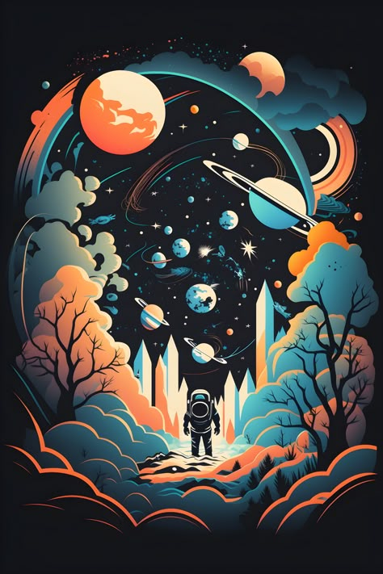

Сириус
Созвездие: Большой Пёс
Яркость: −1,46 m
Космический энтузиаст и астроном-любитель

Созвездие: Большой Пёс
Яркость: −1,46 m
Созвездие: Лира
Яркость: 0,03 m
Созвездие: Малая Медведица
Яркость: 1,98 m
88
созвездий выделено на небе
8 мин
идёт свет от Солнца до Земли
400 км
примерная высота орбиты МКС
1990
год запуска телескопа Hubble
1977
год запуска зондов Voyager
384 400 км
среднее расстояние до Луны